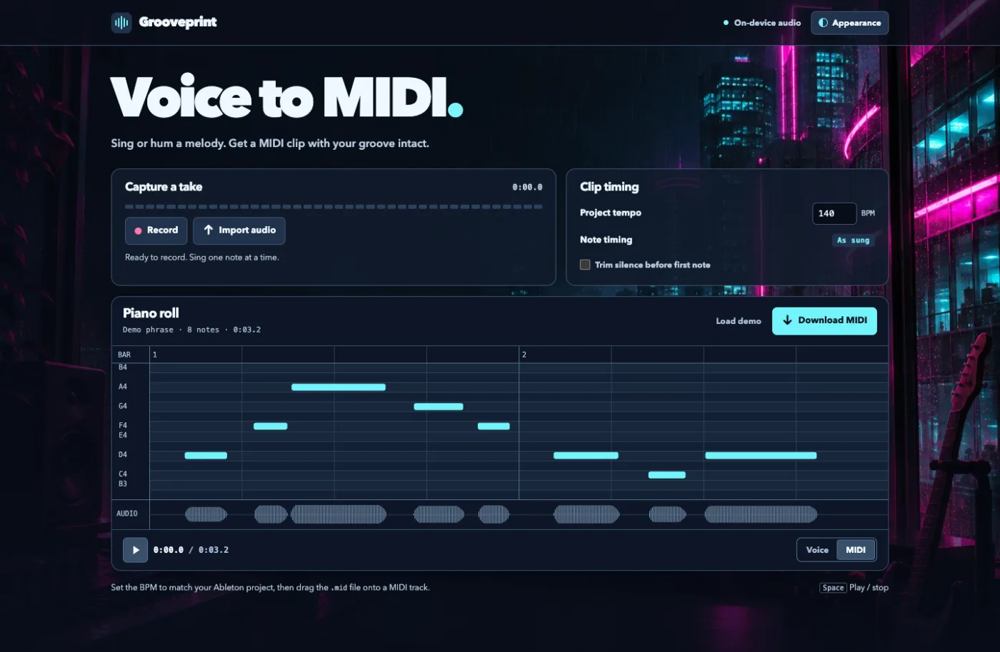

Sing it.
Keep the groove.
Turn your voice into MIDI with the rhythm you sang. Record a melody, preview it on the piano roll, then bring it into your DAW.
Get Grooveprint Release notes
Download Grooveprint
Choose your platform. Recording and conversion run offline.
Mac
macOS 13 or later · Apple silicon and Intel
Windows
64-bit Windows · Setup executable
Installation notes
On Mac, open the DMG and drag Grooveprint into Applications. The app is ad-hoc signed without Apple notarization. On Windows, open the setup executable and follow the prompts. The installer is unsigned.
Skins and backgrounds
Mix any of nine skins with nine backgrounds. Grooveprint remembers your choices on your device.